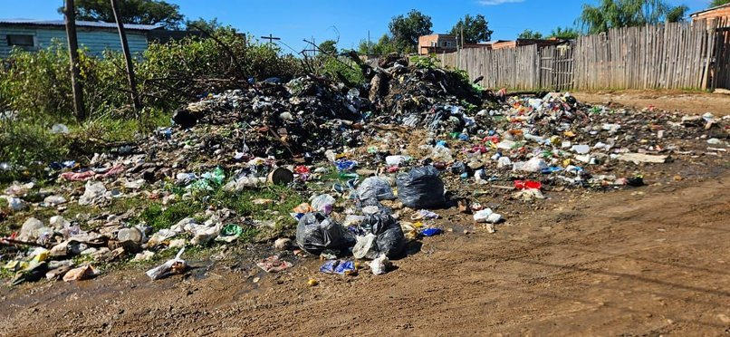
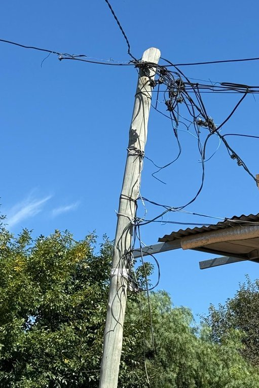
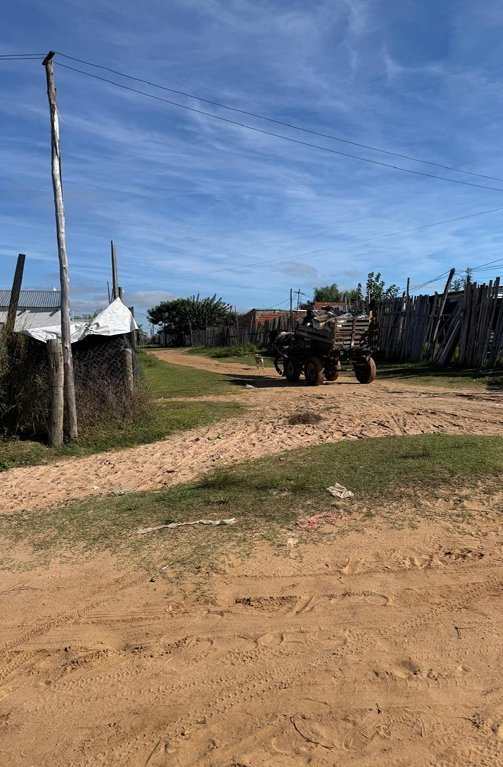
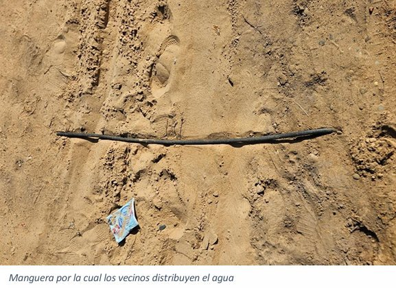

Relevamiento 27 de Noviembre
Cooperativa Eléctrica · Concordia, Entre Ríos
Sector Noroeste · Nogueira (S), Vía del ferrocarril (N), Pbro. J. Odiard (E), Bv. Yuquerí (O)
Zona
Noroeste
El asentamiento está ubicado en el sector noroeste de la ciudad. Lo delimitan las calles Nogueira al sur, la vía del ferrocarril al norte, al este la calle Presbítero Jorge Odiard y al oeste el Boulevard Yuquerí.
Sus inicios datan desde la época de pandemia, donde se empezaron a ocupar las primeras manzanas al sur, pegado al asentamiento La Roca, y luego se fue extendiendo hacia el norte hasta limitar con la vía. Probablemente se siga extendiendo hacia el mismo sentido, pues son terrenos baldíos.
Los enganches vienen desde el asentamiento La Roca, donde existen líneas en altura, específicamente desde la calle 53 Este. Los cables se van pasando de casa en casa, a escasa altura, con postaciones realizadas por los mismos vecinos con postes obtenidos de aserraderos, sin grosor apto para ser firmes.
No se observaron transformadores cercanos. Los vecinos han concurrido en varias oportunidades a la Cooperativa Eléctrica y al municipio solicitando una conexión reglamentaria, pero se encuentran con el inconveniente de que no existen líneas para brindar el servicio en la zona.
Los pobladores manifiestan gran entusiasmo con la posibilidad de regularizar el servicio, ya que entienden la importancia de una conexión formal y segura. Surge la inquietud sobre la capacidad de afrontar económicamente los costos asociados.
| Servicio | Estado | Detalle |
|---|---|---|
| Cloacas | Sin red | El barrio no posee red cloacal |
| Agua corriente | Parcial | En el lote pero no dentro de las viviendas. Mangueras por la calle, propensas a roturas |
| Alumbrado público | Sin red | No hay líneas. Vecinos colocan reflectores en las puertas de sus viviendas |
| Calles | Sin pavimentar | Calles de arena |
| Transporte público | Alejado | Deben trasladarse a Av. Paula Albarracin de Sarmiento o Bv. Yuquerí |
| Recolección residuos | Deficiente | Múltiples basurales. Vecinos recurren a la quema de basura |
| Telefonía celular | Disponible | Utilizada por la mayoría de los relevados |
| TV / Internet | Parcial | Antenas DIRECTV y fibra óptica de Megacable |
| Educación | Escuela N°76 "Madre Teresa de Calcuta" o Escuela N°71 "Independencia". Algunos hijos menores concurren al Hogar Nueva Vida (Bv. Yuquerí), con talleres y actividades recreativas. |
| Salud | Centro de Atención Primaria del barrio Constitución. Para situaciones complejas acuden al Hospital Masvernat. |
Los habitantes son por lo general personas jóvenes con hijos menores. Han ido ocupando los terrenos y trazando los lotes a medida que fueron formando sus propias familias. La totalidad de los entrevistados manifiestan que la casa es propia y el terreno municipal. No tienen certificado de RENABAP.
| Ocupación | Changas, aserraderos o trabajo en la fruta. Muchos tienen caballos y carros con los que recogen basura para reciclado. |
| Ingresos | La mayoría de las mujeres cobra la AUH como entrada fija. Las changas masculinas dejan entre $15.000 y $25.000 diarios cuando se concretan. |
| Nivel educativo | 80% nivel primario · 18,67% secundario · 1,33% terciario |
| Material de viviendas | 22 viviendas de madera (precarias, una habitación, cocina-comedor y baño exterior) · 4 de material noble |
Se trata de un asentamiento nuevo y en continua expansión, con hogares muy precarios y dificultades para acceder a los servicios básicos. Todos los vecinos entrevistados han manifestado gran entusiasmo respecto a la posibilidad de regularizar el servicio eléctrico en su barrio, ya que entienden la importancia de contar con una conexión formal y segura. Sin embargo, surge la inquietud compartida sobre la capacidad de afrontar económicamente los costos asociados.



